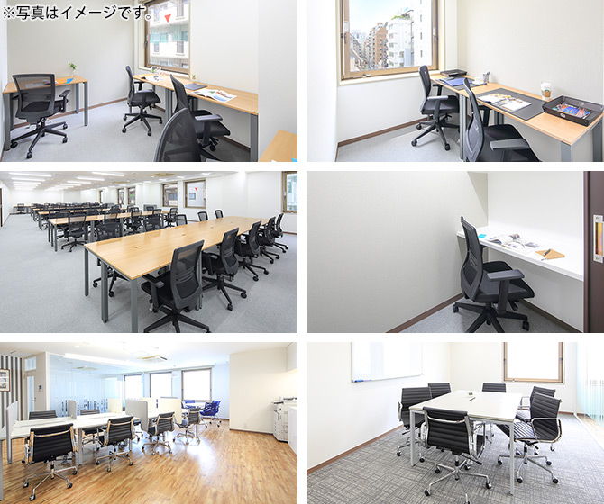

【個室レンタルオフィス】
オープンオフィス三田国際ビル
- オフィス詳細
- 周辺ガイド
徒歩10分圏内に5駅複数路線が利用可能な好立地。都心でありながら、東京タワーや広大な芝公園、増上寺など美しい景観が楽しめる、落ち着いた雰囲気が魅力的な赤羽橋エリアのランドマークビル。近隣には慶應義塾大学や東京都済生会中央病院があり、ビル内には店舗だけでなくクリニックや郵便局もあり、オフィスライフをサポートする環境が充実。
オープンオフィス三田国際ビルが提供するオフィスサービス
-
 高速インターネット＜光ファイバー＞
高速インターネット＜光ファイバー＞
- 100Mbpsの光ファイバーによるブロードバンド環境をご用意しました。各部屋に配線済みですので、パソコンに繋げばすぐLAN経由で高速インターネットを利用出来ます。
-
 ネットワーク・カラーレーザープリンタ+スキャナー
ネットワーク・カラーレーザープリンタ+スキャナー
- ネットワークを利用して、各お部屋のパソコンから印刷できます。プリンタをご用意いただく必要もございません。
スキャナー機能も搭載しております。
-
 カラーレーザーコピー
カラーレーザーコピー
- フロア内にご用意してあります。カード方式でコピーが出来ますので、小銭の準備が不要です。
-
 ICカードキーによる入室管理
ICカードキーによる入室管理
- 専用ICカードを使ったホテル式のスマートシステムを用いて、セキュリティーを向上させています。
-
 ミーティングルーム（会議室）
ミーティングルーム（会議室）
- 商談・会議にご利用いただける共有スペースをご用意しています。インターネットで簡単に予約をしていただけます。
-
 無線LAN（WiFi）
無線LAN（WiFi）
- 共有スペースとミーティングスペースにて、無線LAN(WiFi)サービスをご利用いただけます。

オープンオフィス三田国際ビルの特徴

・5駅複数路線が利用可能な好立地（都営大江戸線 赤羽橋駅から徒歩3分、都営三田線 芝公園駅から徒歩7分、都営浅草線・都営三田線 三田駅から徒歩9分、東京メトロ・都営大江戸線 麻布十番駅から徒歩9分、JR田町駅から徒歩10分）
・都心でありながら、東京タワーや広大な芝公園や増上寺など美しい景観が楽しめる、落ち着いた雰囲気が魅力的な赤羽橋エリアのランドマークビル
ＮＵＰ・フジサワ丸の内ビルは伏見通りに面した大型ビル
・ビル内には店舗だけでなくクリニックや郵便局もあり、オフィスライフをサポートする環境が充実
・地下1階にカーシェア有り
オフィス周辺のMap
オープンオフィス三田国際ビルの住所・アクセス
- 住所:
- 東京都港区三田一丁目4番28号
- 電車からのアクセス:
- 都営大江戸線「赤羽橋駅」 徒歩3分、都営三田線「芝公園駅」 徒歩7分、JR各線「田町駅」 徒歩10分
- お車でのアクセス:
- 首都高 芝公園口出口から約400m
リージャスグループの説明
リージャス・グループは、柔軟なワークスペースを提供する世界最大の企業です。そのネットワークは世界120カ国1,100都市、3300拠点に及びます。会員数は250万人で、業界で成功を収める大小様々な企業や起業家の方々にご利用いただいています。
リージャスは、個室タイプのレンタルオフィス、コワーキングスペースなど多彩なオフィスプラン、近年需要が高まるモバイルワークやバーチャルオフィス、障害復旧サービスの提供を通じ、お客様が予算やワークスタイルに合わせて仕事を行うことができる環境を提供いたします。